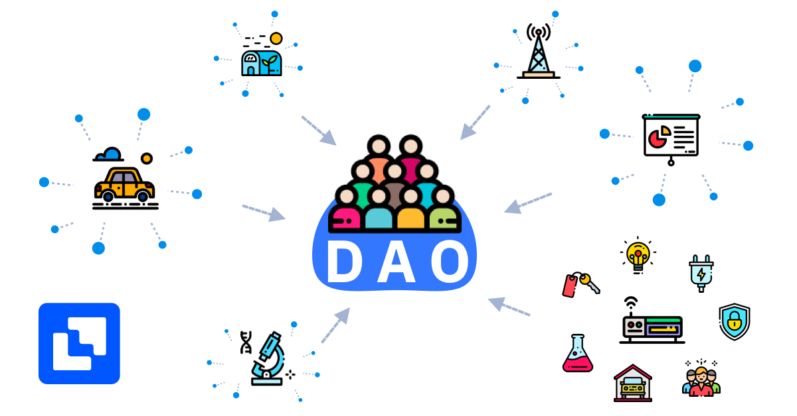

Blockchain is disrupting status roles and authority in organizations
Pluralism is a new blockchain initiative proposed by Seth Godin


Years ago when I was doing research in cryptographic solutions and theories it was mainly because I had seen into these chunk of mysterious letters of this Book a pattern of hash codes that were there for proving something or holding hidden information. At that time I was not aware of blockchain and this technology was not stillborn but I saw the possibilities of application of cryptographic theories for guaranteeing relationships between entities.
Now since the paper of … and the birth of bitcoin, blockchain is eating the world like how software did with the revolution of personal computers by transferring responsibilities, powers, status roles, and voiced from a small set of people and organizations to the crowd and to those who really deserve them.
I have followed since the progress that has been made in the implementation of blockchain-driven applications but most of these applications were around currencies and were mostly driven by speculation. My past experience in the banking sector and my knowledge of financial markets made me become a bit .. of these kinds of blockchain applications. Hopefully, I have found yesterday a very good initiative about blockchain worth pursuing because this initiative is about making this world a better community driven place where each voice count but way before I saw that blockchain was a pretty path to take for this tech-enabled solution about swaps that I was writing about. to say that now I have two reasons to concentrate my effort of learning and contributing to blockchain theories and applications.
This blockchain-driven initiative is called Pluralism and is about Decentralized Autonomous Organizations (DAO), an initiative proposed by Seth Godin. Pluralism is a new way of implementing and managing votes. My point is that this initiative could make democracy better and allow unheard voices to be heard while helping us as a society make better decisions about our shared future.
Actually, Pluralism is a tech project rather than a political one but I am confident that once the tech stack will be built it will have a big impact on politics because we will know that it is possible to make every voice really count and weigh. This seems like a dream but most of the things that are today's common practices and behavior made possible by the power of technology were seen as dreams but the beliefs and effort of innovators and early adopters have made them useful things in our everyday life addiction driven tech solutions took apart. Then if you are an innovator or an early adopter I think that you should be in this initiative.
I am in it if you want to be in it then it is here.